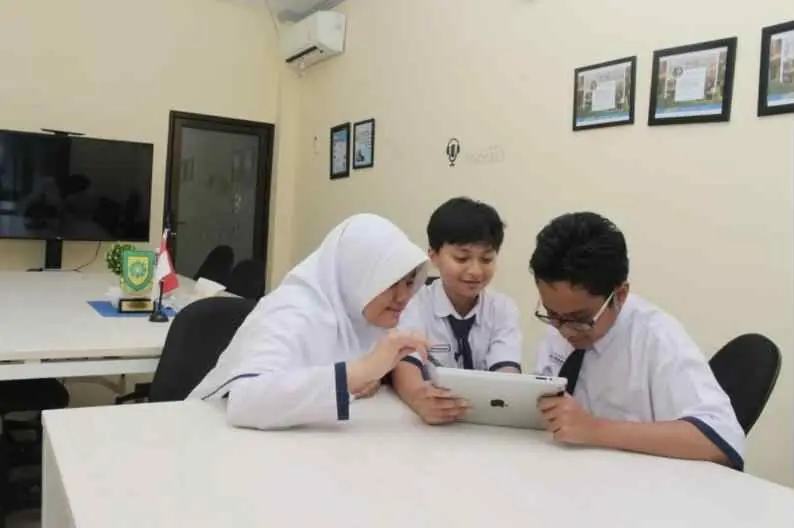

Program & Jenjang
Tiga jenjang dalam satu lingkungan, masing-masing memadukan Kurikulum Nasional dengan Kurikulum B.E.S.T khas Mutiara dalam sistem full day school.
Kurikulum B.E.S.T
Di samping Kurikulum Nasional yang menilai pengetahuan, keterampilan, sikap, dan perilaku, setiap jenjang mengikuti empat arah berikut.
Berkarakter
Disiplin, mandiri, berintegritas, cinta tanah air, dan berjiwa pemimpin.
Edukatif
Cepat belajar, berwawasan luas, visioner, dan ingin tahu.
Solutif
Mampu memecahkan masalah bagi diri sendiri, orang lain, dan masyarakat.
Terampil
Dibekali kecakapan hidup yang praktis.

Kelompok Bermain, TK A, dan TK B
PAUD
Anak belajar lewat bermain, bereksplorasi, dan pembiasaan baik, dengan bahasa Indonesia dan pembiasaan bahasa Inggris dalam kegiatan harian.
- Usia masuk
- KB 3 tahun, TK A 4 tahun, TK B 5 tahun (per Juli)
- Kelas
- Maksimal 25 anak dengan 2 guru
- Jam TK
- Senin–Kamis 07.45–13.00, Jumat 07.45–11.00 WITA
- Jam KB
- Senin, Rabu, Jumat 08.00–11.00 WITA
- Entrepreneur: anak berjualan barang yang dibawa dari rumah pada hari pasar
- Explore Science: presentasi sains sederhana sesuai tema belajar
- Ekstrakurikuler: menggambar, drumband, taekwondo, coding, tari Bali
- KB dan TK sudah terakreditasi

Kelas 1–6
Sekolah Dasar (SD)
Masa SD membangun dasar akademik yang kuat sambil menumbuhkan kreativitas, kolaborasi, kepemimpinan, dan jiwa wirausaha.
- Usia masuk
- 6 tahun pada bulan Juli tahun ajaran berjalan
- Kelas
- Maksimal 28 siswa dengan 2 guru
- Jam belajar
- Senin–Kamis 07.30–15.00, Jumat 07.30–11.00 WITA
- Cinta tanah air dan ikut melestarikan budaya lokal
- Bahasa Inggris dan teknologi sebagai bekal sehari-hari
- Kelas tahfidz Al-Qur’an bagi yang berminat
- Ekstrakurikuler: pramuka, pencak silat, renang, futsal, paduan suara, musik, menggambar, tari daerah

Kelas 7–9
Sekolah Menengah Pertama (SMP)
Remaja belajar secara aktif dan kritis dengan beragam metode dan media, serta dibimbing bertahap menuju pribadi mandiri dan berintegritas.
- Kelas
- Maksimal 25 siswa
- Jam belajar
- Senin–Kamis 07.30–16.30, Jumat 07.30–16.00 WITA
- Program khas: Best Leadership Program, Business Day, Super Camp, Outing Class
- Budaya membaca, narasi akademik, dan kajian Al-Qur’an berbasis proyek
- Kegiatan pengembangan diri dan kepedulian lingkungan
- Ekstrakurikuler: pramuka, pencak silat, panahan, jurnalistik, futsal, basket, robotik, fotografi & desain grafis, videografi, klub karya ilmiah, musik, memasak, paduan suara


Tahfidz Al-Qur’an
Kelas alternatif bagi siswa yang ingin menghafal lebih cepat, diajarkan dengan metode Wafa.
PAUD
Target 1 juz
SD
Target 3 juz
SMP
Target 2 juz
Jam belajar mengikuti informasi yang dipublikasikan sekolah dan dapat disesuaikan tiap tahun. Silakan konfirmasi jadwal terbaru kepada tim kami.
Siap bergabung dengan Mutiara School?
Hubungi tim kami lewat WhatsApp untuk info pendaftaran, biaya, dan kunjungan sekolah.
Daftar via WhatsApp